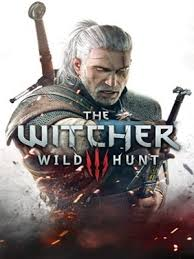

FŐOLDAL
Üdvözlünk az RPG Világok portálon! Ez az oldal a legnépszerűbb és legnagyobb hatású számítógépes szerepjátékok (Role-Playing Games) univerzumait mutatja be. Merülj el a lenyűgöző történetekben, fedezz fel hatalmas, nyitott világokat, és ismerd meg azokat a klasszikusokat, amelyek alapjaiban határozták meg a modern játékipart. Válaszd ki a kedvencedet, és induljon a kaland!

The Witcher 3
Bújj Ríviai Geralt, a mutáns szörnyvadász bőrébe egy háború sújtotta, sötét fantasy világban. Keresd meg fogadott lányodat, Cirit, miközben politikai intrikákba és ősi átkokba keveredsz.
Tovább a játékhoz
Fallout NV
A poszt-apokaliptikus Mojave sivatagban a túlélés nem egyszerű. Egy meglőtt futárként indulsz útnak, hogy visszaszerezd a csomagodat, de végül New Vegas sorsáról döntesz.
Tovább a játékhoz
TES 5: Skyrim
Fedezd fel Skyrim zord, fagyos vidékét Sárkányszülöttként. Tanulj meg hatalmas erejű kiáltásokat, és mentsd meg a világot a visszatérő sárkányok fenyegetésétől.
Tovább a játékhoz